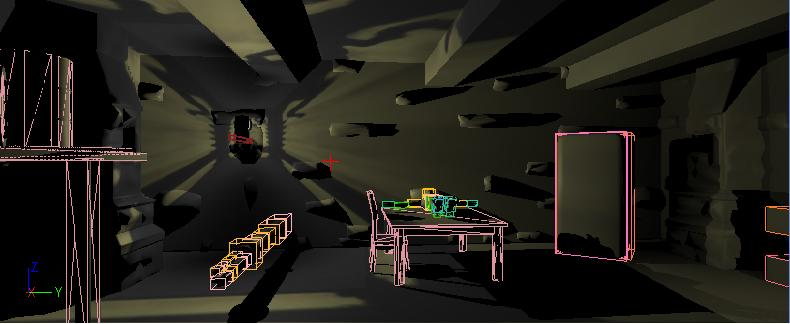

UDN
Search public documentation:
ShowFlagsCH
English Translation
日本語訳
한국어
Interested in the Unreal Engine?
Visit the Unreal Technology site.
Looking for jobs and company info?
Check out the Epic games site.
Questions about support via UDN?
Contact the UDN Staff
日本語訳
한국어
Interested in the Unreal Engine?
Visit the Unreal Technology site.
Looking for jobs and company info?
Check out the Epic games site.
Questions about support via UDN?
Contact the UDN Staff
显示标志
概述
show 命令来切换显示标志。

碰撞
show collision

网格
边界
show bounds
静态网格物体
show staticmeshes
地形
show terrain
地形碰撞
show terraincollision
请参照地形碰撞查看页面获得更多详细信息。
BSP
show bsp
骨架网格物体
show skelmeshes
约束
show constraints
雾
show fog
植被
show foliage
路径
show paths
网格物体的边缘
show meshedges
大的顶点
区域颜色
入口
点击代理
[UnrealEd.HitProxy] HitProxySize=5点击代理视图模式对于解决选择相关的问题是非常有用的。